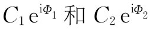
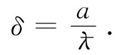
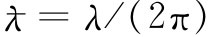
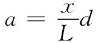
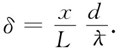
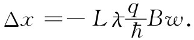
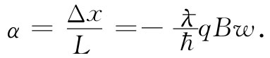
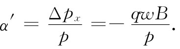
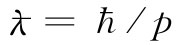

当我们从经典力学过渡到量子力学时，在什么概念是重要的方面有了很多改变。我们曾在第1卷中谈过其中的一些，特别是，力的概念逐渐消失，而能量和动量的概念却成为最重要的了。你应当记得，人们与之打交道的乃是在空间和时间里变化着的概率幅，而不是粒子的运动。在这些振幅中，既有与动量相联系的波长，又有与能量有关的频率。因此，那些能确定波函数相位的动量和能量就成了量子力学中重要的量了。我们处理的是改变波的波长的相互作用，而不是力。力的概念变得十分次要，如果它多少还存在一点的话。比方，当人们谈论核力时，他们经常加以分析和计算的是两个核子间的相互作用能量，而不是它们之间的力。从没有人会为了找出力是个什么样子而对能量取微分。在这一节中我们要描述矢势和标势是怎样进入量子力学的。实际上，正因为动量和能量在量子力学中起着重要作用，才使得A和ϕ提供了把电磁效应引进量子描述的最直接途径。
我们必须稍微复习一下量子力学是如何处理问题的。让我们再次考虑在第1卷第37章中曾经描述过的假想实验，在其中电子经两个狭缝而衍射。这个装置再次表示在图15-5上。能量几乎相同的电子离开了源而向具有两条狭缝的壁前进。在壁的外面是“挡板”，在其上有一个可移动的探测器，我们称之为I，它是用来测量电子到达挡板上距离对称轴为x处的一个小区域中的比率。这比率正比于各个别电子在离开了源之后到达该挡板区的概率。这概率具有如图所示的那种复杂形状的分布，我们认为这是由于两个波——每个来自一个狭缝——相互干涉所致。这两个波的干涉结果取决于它们间的相位差。也就是说，若振幅分别为 ，则相位差δ=Φ1 -Φ2 就确定了它们的干涉图样［见第1卷，式（29.12）］。设屏与狭缝之间的距离为L，又若通过两狭缝的电子所走过的程差为a，如图所示，则这两个波的相位差为
 （15.27）
照例，我们令 ，其中λ就是概率幅空间变化的波长。为简单起见，将只考虑那些远小于L的x值，这样便可令

和
 （15.28）
当x等于零时，δ为零，两波同相，因而概率有一个极大值。当δ等于π时，两波反相，它们就会干涉相消，而概率成为极小。因此，我们将得到有关电子强度的那种波形函数。
图15-5 用电子做的一个干涉实验（同时参阅第1卷第37章）
现在我们想要说明用来代替力的定律F=qv×B的量子力学定律。这将是用来确定具有量子力学性质的粒子在电磁场中的行为的那种定律。由于发生的事件都要由概率幅来确定，所以这一定律就必然会告诉我们磁效应如何影响概率幅；我们不再与粒子的加速度打交道了。这定律是这样的：经过任一轨道的粒子，其概率幅的相位因磁场存在而改变的量，等于矢势沿整个轨道积分乘该粒子的电荷再除以普朗克常量。也就是，
要是没有磁场，波到达时会有某一定的相位。但若某处存在磁场，则到达波的相位增加了式（15.29）中的积分。
尽管对于目前的讨论不必用上它，但我们还是要提出静电场的效应在于产生一个相位变化，它等于标势ϕ的时间 积分的负 值：
上述两式不仅对于静场正确，而且合起来对于静的或动的任何 电磁场也都正确。这就是用来代替F=q（E+v×B）的定律。然而，现在我们只考虑静磁场。
假设在双狭实验中存在磁场，则我们要问，通过两狭缝的两个波在到达屏上时其相位如何。两波的干涉确定概率的极大值将出现在何处。我们可把沿路径（1）的波的相位叫作Φ1 。若Φ1 （B=0）为在没有磁场时的相位，则当加上磁场时这个相位便将是
无场时的相位差我们将称之为δ（B=0），那恰好就是在上面式（15.28）中曾经算出来的那个相位差。并且，我们注意到，这两个积分还可以写成一个 沿路径（1）向前并沿路径（2）返回的积分，我们称这个路径为闭合路径（1-2）。因而有
上式告诉我们，电子的运动如何被磁场所改变。有了这个式子，我们就能求出在挡壁上强度为极大和极小的那些新位置。
可是，在做这件事之前，我们要提出下面有趣而又重要的一点。你会记起，矢势函数具有某种任意性。其差为某一标量函数梯度▽ψ的两个不同的矢势函数A和A′，都代表同一个磁场，因为梯度的旋度为零。因此，它们将给出相同的经典力qv×B。如果在量子力学中其结果取决于矢势，则在许多可能的A函数中究竟哪一个 是正确的呢？
答案是，A同样的任意性在量子力学中依然存在。如果我们把式（15.33）中的A改变成A′=A+▽ψ，则对于A的积分变成
∮（1-2） A′·ds=∫（1-2） A·ds+∮（1-2） ▽ψ·ds.
▽ψ的积分仍环绕闭合 路径（1-2），但根据斯托克斯定理，梯度的切向分量沿一闭合路径的积分总等于零。因此，A和A′两者都给出相同的相位差和相同的量子力学干涉效应。在经典和量子力学的两种理论中只有A的旋度才是要紧的，对A函数的任何选择，凡具有正确旋度的，都给出了正确的物理意义。
如果我们引用§14-1的那些结果，则结论明显相同。那里我们曾求得A沿一闭合路径的线积分为穿过该路径的B的通量，在这里就是穿过路径（1）与（2）之间的通量。如果我们愿意，式（15.33）便可以写成：
式中B的通量通常指B的法向分量的面积分。这结果仅取决于B，从而也仅取决于A的旋度。
由于用B或用A都能写出结果，因此你可能倾向于认为B保持它本身为“真实”的场，而A仍可视作为一种人为的结构。但我们原来提出的“真实场”的定义，是建筑在真实场不会对粒子做超距作用的概念上的。然而，我们能够举出一个例子，其中在有某种机会找到粒子的任何地方，B都等于零或至少任意地小，因而不可能认为磁场会直接对粒子作用。
你应当记得，对于通有电流的长螺线管，管内有B场，而管外则无；但却有许多A环绕在管的外面，如图15-6所示。若我们安排一种情况，其中电子只在螺线管外 被发现——即在那个只有A的地方——则按照式（15.33）对其运动的影响依然存在。从经典方面看，这是不可能的。按经典理论是，力仅取决于B；为了知道螺线管是否正通有电流，就必须使粒子穿过它。但从量子力学方面看，通过粒子围绕 螺线管运转，甚至不用靠近它，你就能发现有磁场存在于螺线管内！
图15-6 一个长螺线管的磁场和矢势
假设我们把一个直径很小的长螺线管恰好放在障壁后面的两缝之间，如图15-7所示。螺线管直径要比两狭缝间的距离d小得多。在这种情况下，电子在狭缝处的衍射不会提供电子接近该螺线管的相当大的概率。这对我们的干涉实验将会发生什么影响呢？
图15-7 磁场能够影响电子的运动，哪怕场仅存在于其中找到电子的概率是任意小的区域里
试比较电流有否流经螺线管的两种情况。若没有电流，我们便不会有B或A，因而就得到挡板处电子强度的原来图样。但若对螺线管通电流并在管内建立磁场B，则在管外便有A。于是就存在一个正比于管外A的环流的相位差方面的移动，这意味着整个极大和极小的图样被移至一个新位置。事实上，由于对任一对路径来说，穿过其中的B的通量是常数，因而A的环流也是常数。对于每一到达点来说就有相同的相位变化；也就是相当于使整个图样在x方向上移动一个常数，比方说x0 ，那是容易算出的。极大强度将出现在两个波的相位差为零的地方。应用关于δ的式（15.32）或（15.33）以及关于δ（B=0）的式（15.28），我们得
从螺线管所在的位置来看，出现的图样 [1] 应如图15-7所示。至少，这是量子力学的预言。
的确如此，这一实验最近已经做成了。它是一个十分难做的实验，由于电子的波长很短，所以仪器必须以微小的尺度来观察干涉现象。两狭缝必须互相紧靠，这意味着需要有一个非常细的螺线管。事实证明，在某些场合下，铁晶体将会生长成十分长而又只在显微镜下才能看得到的细丝，即所谓晶须。当这些铁晶须被磁化时，像微小的螺线管，因而除了靠近两端的地方，外面就没有任何磁场。电子相干实验，是把这种晶须放在两狭缝之间做出来的，而所预言的电子图样中的移动被观测到了。
于是，在我们的意义上A场是“真实”的。你可能会说：“但磁场本来就有 的。”本来就有，不过要记住我们原来的概念——所谓场是“真实”的，那只要它是为了得到运动而就必须在粒子所在的位置 被规定的。在晶须里的B场却有着超距的作用。如果我们不愿意用超距作用来描写它的影响，则非得用矢势不可。
这一课题曾有过一段有趣的历史。我们所描述的理论从1926年量子力学问世时人们就知道了。矢势出现在量子力学的波动方程（薛定谔方程）中的事实，从该方程最初被写出来的那一天起就已经明显了。它不可能以任何轻易的方式由磁场代替，这已由企图做此种尝试的人们陆续注意到了。从我们对于在没有磁场的区域里运动的电子仍然受到影响的例子来看，那也是清楚的。但由于在经典力学中A没有显示出任何直接的重要性，并且由于它可以通过加上一梯度而改变，人们便不断地说矢势不具有直接的物理意义——即使在量子力学中也只有磁场和电场才是“正确”的。在进行回顾时似乎觉得奇怪，为什么从没有人想要讨论这一实验，一直到了1956年才由博姆和阿哈罗诺夫最先对此提出建议，从而使整个问题明朗化。其意义始终存在，但就是没有人曾注意到它。于是，当这一事情被提起时许多人都颇受震动。这就是为什么会有人认为值得做实验以弄明白它确实是对的，尽管这么多年来已被人们确信的量子力学给出过明确的答案。有趣的是，像这样一件事情竟搁置达30年之久，只是由于对什么东西有意义而什么东西没有意义的某些偏见，就使这件事一直被忽视。
现在我们希望继续做稍微进一步的分析。要证明量子力学公式与经典公式间的关系，即证明为什么结果是：若以足够大的尺度来考察事件，则它看起来好像粒子被等于qv×▽×A的力所作用着似的。为要从量子力学得到经典力学，需要考虑这种情况，其中所有波长比起如场那样的外加条件做出可观变化所跨越的距离来都远为微小。我们将不在最普遍的场合下证明这一结果，而只是以一个十分简单的例子表明它是如何得出来的。我们再次考虑相同的狭缝实验，但不再把所有磁场都局限在两狭缝间的一个十分微小的区域里，而是设想磁场延伸至狭缝后面较广阔区域中，如图15-8所示。我们将考虑一种理想情况，其中磁场在与L相比相当小的、宽度为w的狭窄长条中是均匀的（那很容易安排，挡板可以随意地放在某一远处）。为了要算出相位的移动，必须算出沿路径（1）和（2）的两个积分。正如我们曾经见到的，它们间的差值恰好就是在两路径间B的通量。对于我们的近似程度，这通量为Bwd。这样，对于这两路径的相位差就是
我们注意到，对于我们所取的近似程度，这一相位移动与角度无关。因此，这一效应又把整个图样向上移动一个距离Δx。利用式（15.35），
图15-8 由狭长条磁场所引起的干涉图样的移动
对于δ-δ（B=0），利用式（15.37）得
 （15.38）
这样的移动相当于把所有轨道都偏转了一个角度α（见图15-8），这里
 （15.39）
原来按照经典理论，我们也会期待薄狭长条磁场会把所有轨道都偏转某一个小角度，比如说α′，如图15-9（a）所示。当电子通过磁场时，它们将感受到一个持续了时间w/v的横向力qv×B。它们横向的动量的改变就恰好等于这个冲量，因此
Δpx =-qwB. （15.40）
角偏转［图15-9（b）］等于这一横向动量对总动量p的比。我们得到
 （15.41）
图15-9 粒子通过狭长条磁场时被偏转
可以把这个结果同由量子力学算出来的相同的量α做比较。但经典力学与量子力学之间的关系则是这样：一个具有动量p的粒子相当于随波长 变化的量子振幅。应用这个等式，α和α′就彼此全等。经典的与量子的两种计算给出相同的结果。
从这个分析我们看到，在量子力学中以明显的形式出现的矢势怎样产生一个仅取决于其微商的经典力。在量子力学中重要的是邻近路径间的相干作用，结果往往是该效应仅取决于从一点至另一点场A变化 了多少，因而仅取决于A的微商而并不取决于A本身之值。虽然如此，矢势A（以及与相随的标势ϕ）看来似乎给出了物理学的最直接描述。我们越是深入到量子理论中去，这一点就变得越清楚。在量子电动力学的普遍理论中，人们把矢势和标势作为代替麦克斯韦方程的一组方程中的基本量：E和B逐渐从物理定律的现代表示式中消失，它们正在被A和ϕ所代替。